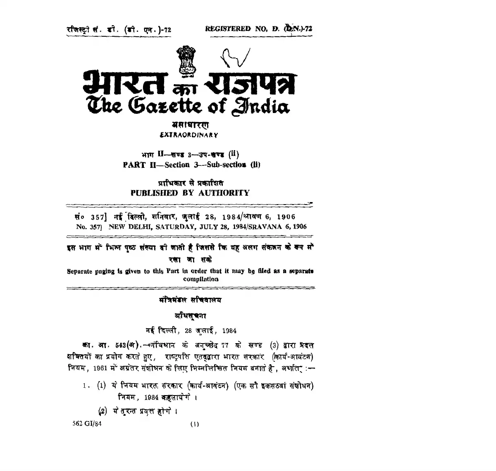
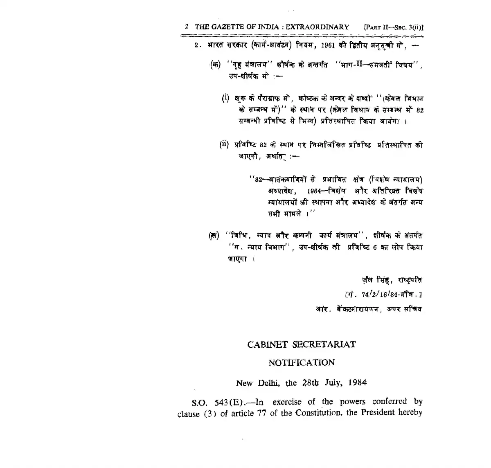
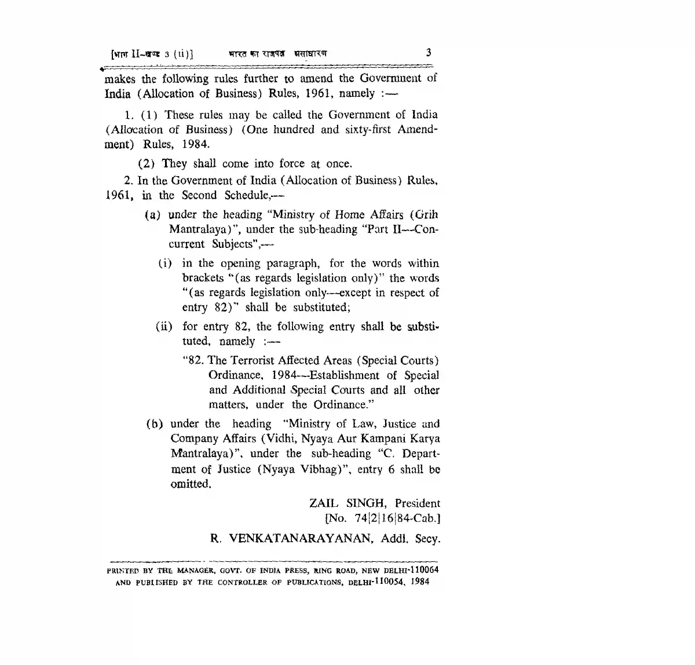

Amendment #161 (S.O. 543(E), 1984)
3 changes: 0 to the First Schedule, 3 to the Second Schedule. 1 applied2 not applied
The order, page by page
Page 1 of 4

Page 2 of 4

Page 3 of 4

123Schedule 2 › Ministry of Home Affairs › Part II--Con- current Subjects
for “(as regards legislation only)” read “(as regards legislation only-except in respect of entry 82)”
not applied (the change could not be placed in the Rules as read; see How this document was read)
Schedule 2 › Ministry of Home Affairs › Part II--Con- current Subjects › entry 82
- 82. The Terrorist Affected Areas (Special Courts) Ordinance, 1984-Establishment of Special and Additional Special Courts and all other matters, under the Ordinance.
not applied (the change could not be placed in the Rules as read; see How this document was read)
Schedule 2 › Ministry of Law, Justice and Company Affairs › Depart- ment of Justice › entry 6
applied at schedule 2 › ministry MINISTRY OF LAW. JUSTICE AND COMPANY AFFAIRS › department C › entry 6 in the Rules after #161
Page 4 of 4
How this document was read
Known issues
| Change | Issue | Known as |
|---|---|---|
| 1 | change 1: the words to substitute are not in schedule 2 › ministry MINISTRY OF HOME AFFAIRS › part II | Home Affairs' structure |
| 2 | change 2: no entry 82 under schedule 2 › ministry MINISTRY OF HOME AFFAIRS › part II | Home Affairs' structure |
From the Government of India (Allocation of Business) Rules, 1961 and their amendments, as published by the Cabinet Secretariat (cabsec.gov.in), read by orgpedia. The readings of the older scanned gazettes have known gaps.